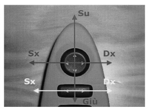

7005RA CHECK THE OPERATION OF THE DOOR MIRROR ADJUSTMENT CONTROL
- Path
- Test > 70 FITTINGS > 7005 PASSENGER COMPARTMENT FRONT SIDE DOORS > 7005R FRONT DOOR MIRRORS > 7005RA CHECK THE OPERATION OF THE DOOR MIRROR ADJUSTMENT CONTROL
- Kind
- test / check procedure
- Applies to
- all engines; all production periods
- Interactive page
- https://sloeber94.github.io/elrnDB-fCrm/en/#/194002271
Applies to: all engines; all production periods
1. Remove the control panel following,
Op. 7005R40 REAR VIEW MIRROR-S AND DOOR MIRROR-S POSITIONING SWITCH UNIT - R.R.
on the driver's door and disconnect the connector.
2. Position the probes of an ohmmeter betwen pins 6 and 8 on the joystick connector and check for the following resistance values for both LH and RH mirror selections
3. Position the probes of an ohmmeter betwen pins 6 and 7 on the joystick connector and check for the following resistance values for both LH and RH mirror selections
4. Position the probes of an ohmmeter betwen pins 6 and 9 on the joystick connector and check for the following resistance values for the vertical up and down selection
MOVEMENT | RESISTANCE VALUE | CONNECTOR PIN |
Left mirror selection | 770 Ohm 10% | 6 and 8 |
Right mirror selection | 218 Ohm 10% | 6 and 8 |
Left horizontal | 768 Ohm 10% | 6 and 7 |
Right horizontal | 218 Ohm 10% | 6 and 7 |
Forward up | 768 Ohm 10% | 6 and 9 |
Backward down | 217 Ohm 10% | 6 and 9 |
